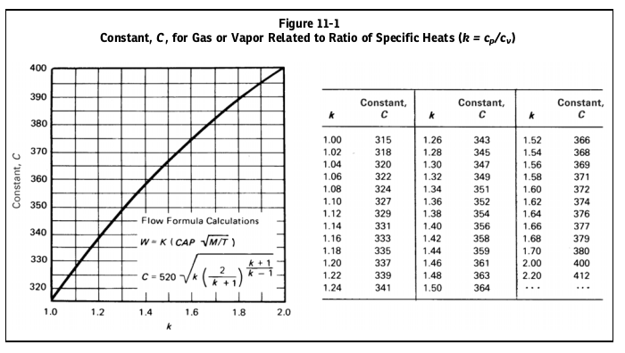
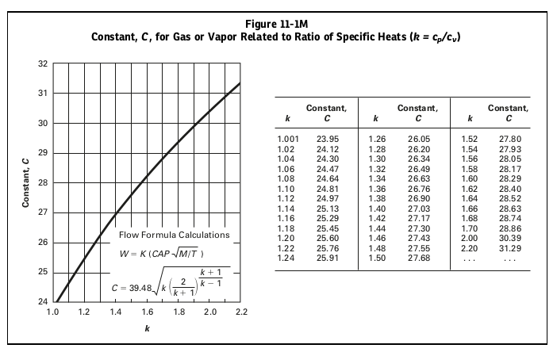
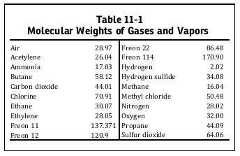
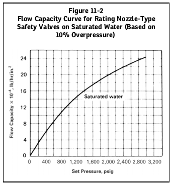
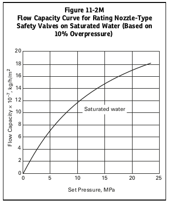

CAPACITY CONVERSIONS FOR SAFETY VALVES
安全閥流量轉換
1. 流量轉換
安全閥或洩壓閥的使用氣體或蒸氣的流量而不以正式的介質額定流量來確認，應透過以下公式來確定：
對於蒸汽
\begin{equation*} W_s=C_N KAP \end{equation*}在此
\begin{eqnarray*} C_N & = & 51.5 ~~用於美國慣用計算\\ & = & 5.25 ~~用於 ~SI~ 制計算\\ \end{eqnarray*}對於空氣
\begin{equation*} W_a=CKAP\sqrt{\frac{M}{T}} \end{equation*}在此
\begin{eqnarray*} C =& &356~~用於美國慣用計算\\ =& &27.03~~用於 ~SI~ 制計算\\ M =& &28.97~ mol/wt\\ T =& &520~~當 W_a~~ 為額定流量時（用於美國慣用計算）\\ =& &293~~當 W_a~~ 為額定流量時（用於 ~SI~ 制計算）\\ \end{eqnarray*}對於任何氣體或蒸氣
\begin{equation*} W=CKAP\sqrt{\frac{M}{T}} \end{equation*}在此
\begin{eqnarray*} A =& &安全閥的實際排放面積 ~ in^2（mm^2）\\ C =& &氣體或蒸氣的常數，它是熱容比~ k=c_p/c_v （見~Figure 11-1~或~Figure 11-1M）\\ K =& &流量係數\\ M =& &分子量\\ P =& &（設定壓力~\times~1.10）加上大氣壓力， psia（MPa_{abs}）\\ T =& &入口絕對溫度〔（℉＋460）（K）〕\\ W =& &任何氣體或蒸氣的流量，lb/hr （kg/h）\\ W_a =& &額定流量，轉換為空氣於入口溫度~60℉（20℃），lb/hr（kg/h）\\ W_s =& &額定流量，轉換為蒸汽，lb/hr（kg/h）\\ \end{eqnarray*}
當需要時也可以使用這些公式任何氣體或蒸汽的流量都是已知的，因此有必要計 算蒸汽或空氣的額定流量。一些常見氣體的分子量蒸氣列於 Table 11-1 。對於碳氫化 合物蒸氣，k 的實際值為未知，保守值 k = 1.001常用，公式變為
\begin{equation*} W=CKAP\sqrt{\frac{M}{T}} \end{equation*}在此
\begin{eqnarray*} C =& &315 &用於美國慣用計算\\ =& & 23.95 & 用於 ~SI~制計算\\ \end{eqnarray*}當需要時，如在輕烴的情況下，壓縮係數 Z 可以包含在公式中對於氣體和蒸氣
\begin{equation*} W= CKAP\sqrt{\frac{M}{ZT}} \end{equation*}


2.
- (a) 由於飽和水容量是配置敏感的，以下內容僅適用於那些具有噴嘴式結構的安全閥（喉部與入口直徑比為 0.25 至 0.80，輪廓連續變化，且係數 K D 超過0.90）。無飽和水等級應適用於其他類型的建築。
- 註：製造商、使用者和檢驗員均應注意：對於下列額定值的應用，閥門應持續承受飽和水的作用。如果在初始洩壓後流介質當蒸汽品質改變時，閥門應依照乾飽和蒸汽進行額定值。安裝在含有汽水混合物的容器或管線上的閥門應按乾飽和蒸汽額定。
(b) 確定飽和水容量目前額定值為 UG-131 並滿足上述 (a) 要求的閥門，請參閱 Figure 11-2。在閥門設定壓力下繪製圖表，垂直向上移動至飽和水位線並水平讀取緩解能力。此容量是透過假設平衡流量和臨界壓力比的計算值得出的理論等熵值。


3. 安全閥流量轉換程式
4. 說明
- 本文件非法規設備設計文件。
- This document is not a regulatory equipment design document.